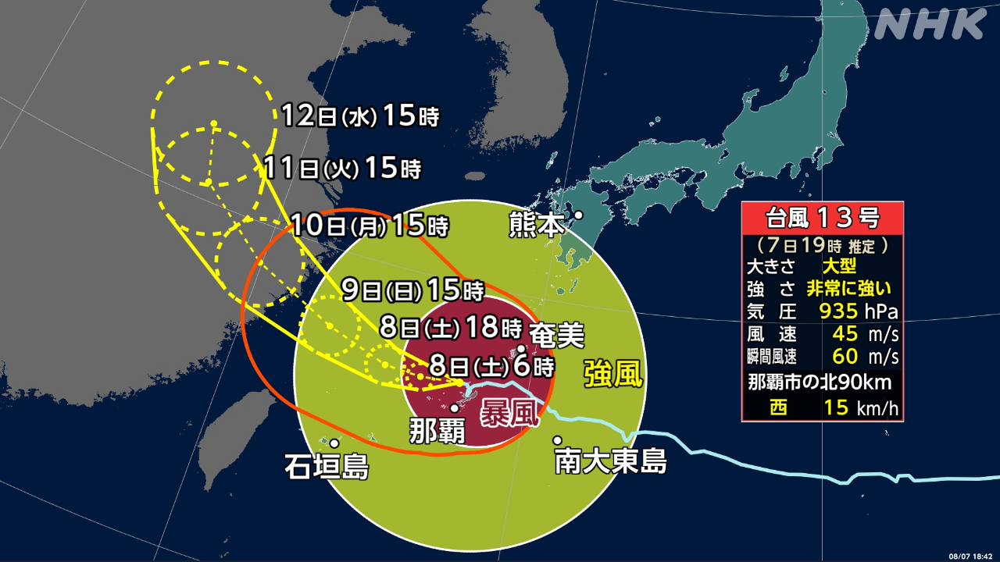
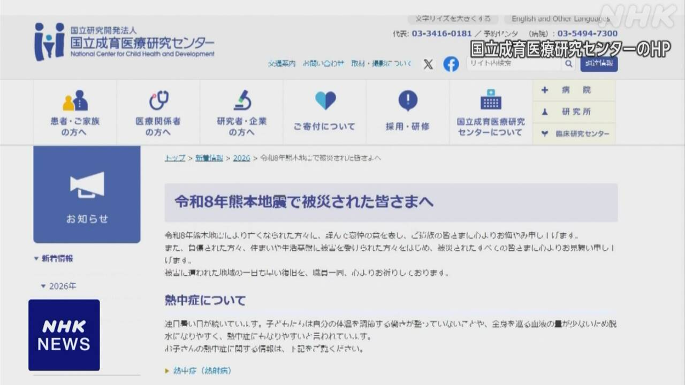
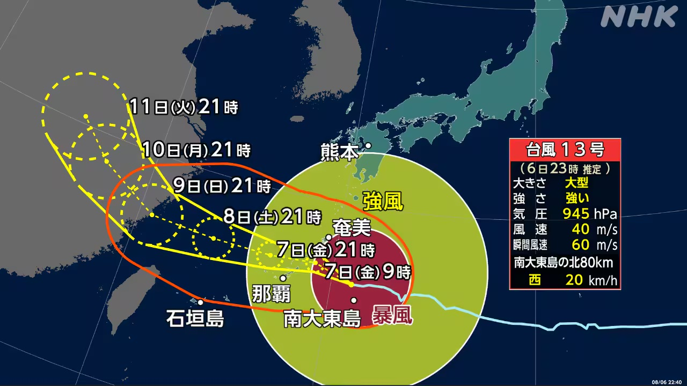

最新ニュース
1️⃣ 台風13号が沖縄県や鹿児島県の奄美地方の近くを進んでいる

大きくてとても強い台風13号が、7日夜、沖縄県や鹿児島県の奄美地方の近くを進んでいます。
台風のまわりでは、とても強い風が吹いています。
「線状降水帯」ができて、雨が同じ場所で長い時間たくさん降るかもしれません。
気象庁は「線状降水帯に気をつけてください。急に雨がたくさん降って危険になるかもしれません」と言っています。
この台風の東の方には、台風15号があります。来週、東北地方や関東地方の近くに来るかもしれません。新しい情報に気をつけてください。
2️⃣ 「地震で怖い経験をした子どもにやさしくしてください」

大きい地震があると、怖くて心配になる子どもがたくさんいます。
国立成育医療研究センターは、いま熊本の子どもたちのために必要なことを、ホームページに書きました。
ホームページによると、できるだけ子どもを1人にしないでください。
心配していると思ったら、体をやさしく抱いてあげましょう。
子どもの話をよく聞いて、質問にはわかりやすく答えましょう。
子どもは怖い経験をすると、いつもできることができなくなるかもしれません。でも、叱らないでください。
3️⃣ 台風13号 沖縄県と奄美地方は風と雨に気をつけて

大きくて強い台風13号は、沖縄県の大東島地方に近い所を西に進んでいます。
沖縄県と鹿児島県の奄美地方では、風が強くなっています。
家が倒れるぐらいのとても強い風が吹くかもしれません。海の波も高くなっています。
沖縄県と鹿児島県の奄美地方などでは、たくさん雨が降りそうです。
気象庁は、強い風や高い波に気をつけるように言っています。山が崩れたり、低い所に水が入ったりするかもしれません。気をつけてください。
4️⃣ 熊本県氷川町 ボランティアが避難している人の健康をチェック

先週の大きい地震で、熊本県では、6700人ぐらいが今も避難しています。
震度7だった氷川町では、1200以上の家が壊れました。車の中やテントに避難している人もいます。
看護師などのボランティアたちは、車の中などに避難している人が元気かどうか、健康をチェックしています。
避難している女性は「近所の家で風呂に入っていますが、毎日は入ることができません」と話していました。
ボランティアは、壊れた家にある財布や携帯電話などをさがす手伝いもしています。
ボランティアの人は「暑くて水道を使うこともできません。今度の災害は大変です」と話していました。
- 〜ても / 〜でも
- 〜ている / 〜でいる
- 〜かもしれない / 〜かもしれません
- 〜てください / 〜でください
- 〜になる
- 〜がある / 〜がいる
- 〜方
- 〜ため
- 〜ため(に)
- 〜こと
- 〜ないでください
- 〜だけ
- 〜によると
- 〜ないで
- 〜ましょう / 〜ましょうか
- 〜てあげる / 〜であげる
- 〜と思う
- 〜やすい
- 〜ことができる
- 〜ところ
- 〜くらい / 〜ぐらい
- 〜そうだ
- 〜など
- 〜ように
- 〜たり〜たりする
- 〜以上
- 〜中
- 〜や〜など
vebaev.github.io
Generated: 2026-08-14 11:44:01 UTC